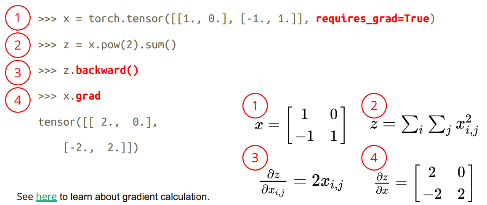

ML学习笔记 #00 PyTorch
本系列为 Machine Learning 学习笔记，主要记录跟随李宏毅老师 ML 2022 Spring 的学习收获。本文是通过官方快速入门 PyTorch Tutorials、官方 API 文档 PyTorch documentation、b站学习视频、李宏毅老师机器学习课程 的 PyTorch 学习总结。
Tensor
类似于 ndarray 的数据结构，构建多维矩阵，可以在 GPU 上训练，并且支持自动微分。
初始化
直接数字构造
1
x = torch.tensor([[1, -1], [-1, 1]]) # directly from data从 NumPy array 转换
1
x = torch.from_numpy(np.array([[1, -1], [-1, 1]]))从另一个 tensor 中构造
1
2x_ones = torch.ones_like(x_data) # retains the properties of x_data
x_rand = torch.rand_like(x_data, dtype=torch.float) # datatype 为float特殊构造0、1、随机 tensor
1
2
3
4shape = (2, 3,)
rand_tensor = torch.rand(shape)
ones_tensor = torch.ones(shape)
zeros_tensor = torch.zeros(shape)
主要属性（shape、datatype、device）
操作方法：
转移到 GPU 训练：
1
2if torch.cuda.is_available():
tensor = tensor.to('cuda')切片操作：类似
numpy矩阵堆叠与拼接
1
2t1 = torch.cat([tensor, tensor, tensor], dim=1) # dim = 1，列上相接
t1 = torch.stack([tensor, tensor, tensor], dim=0) # dim = 0，行上相接乘法运算
element-wise product对应位置的数字相乘1
2t2 = tensor.mul(tensor)
t2 = tensor * tensor矩阵相乘
1
2t3 = tensor.matmul(tensor.T)
t3 = tensor @ tensor.T
压缩与扩张
torch.squeeze()：删除矩阵中大小为1的所有维度例如输入 \(A \times 1 \times B \times C \times 1 \times D\)，转换为 \(A \times B \times C \times D\)
torch.unsqueeze()：在指定位置插入维度为的张量1
2
3x = torch.tensor([1, 2, 3, 4])
torch.unsqueeze(x, 0)
torch.unsqueeze(x, 1)
沿着某维度复制张量
repeat参数是对应维度的复制个数，上段代码为0维复制两次，1维复制两次，则得到以上运行结果。其余扩展情况依此类推
repeat参数个数与 tensor 维数一致时
1
2
3
4a = torch.tensor([[1, 2, 3],
[1, 2, 3]])
b = a.repeat(2, 2)
print(b.shape) # 得到结果torch.Size([4, 6])repeat参数个数与tensor维数不一致时
1
2
3
4
5
6# a形状(2,3)
a = torch.tensor([[1, 2, 3],
[1, 2, 3]])
# repeat参数比维度多，在扩展前先讲a的形状扩展为(1,2,3)然后复制
b = a.repeat(1, 2, 1)
print(b.shape) # 得到结果torch.Size([1, 4, 3])1
2
3
4
5
6# a形状(2,3)
a = torch.tensor([[1, 2, 3],
[1, 2, 3]])
# repeat参数比维度多，在扩展前先讲a的形状扩展为(1,2,3)然后复制
b = a.repeat(2, 1, 1)
print(b.shape) # 得到结果torch.Size([2, 2, 3])
就地操作 In-place operations：
- 操作影响 被操作 tensor 本身的值发生变化，即修改内存
- 可以节省内存，但在计算导数可能会出现问题，不推荐使用
1
tensor.add_(5)
自动求导：
torch.autograd支持自动微分：
1
x = torch.tensor([[1., 0.], [-1., 1.]], requires_grad=True)backward：计算给定张量相对于自变量的梯度总和grad：相对于输入的输出梯度的总和。

数据加载 | Datasets & DataLoaders
dataset
获取和加载数据集
- PyTorch 中提供了许多预加载的数据集（如 FashionMNIST），通过调用函数即可加载
torchvision库：图片数据集 Image Datasetstorchtext库：文本数据集 Text Datasetstorchaudio库：音频信号数据集 Audio Datasets
1
2
3
4
5
6
7
8
9
10
11
12training_data = datasets.FashionMNIST(
root="data", # root是存储训练/测试数据的路径，
train=True, # train指定训练或测试数据集，
download=True, # 下载数据
transform=ToTensor() # feature and label transformations
)
test_data = datasets.FashionMNIST(
root="data",
train=False,
download=True,
transform=ToTensor()
)创建自定义数据集，继承
Dataset类，重写init、getitem、len方法1
2
3
4
5
6
7
8from torch.utils.data import Dataset, DataLoader
class MyDataset(Dataset):
def __init__(self, file):
self.data = ...
def __getitem__(self, index):
return self.data[index]
def __len__(self):
return len(self.data)
dataloader
进行数据加载的功能，数据集分为“小批量”，是否需要乱序打乱
1
2train_dataloader = DataLoader(training_data, batch_size=64, shuffle=True)
test_dataloader = DataLoader(test_data, batch_size=64, shuffle=True)迭代每个元素
1
train_features, train_labels = next(iter(train_dataloader))
TensorBoard | 可视化
可视化数据
add_image(self, tag, img_tensor, global_step=None, walltime=None, dataformats=‘CHW’)：绘制图片，可用于检查模型的输入，监测 feature map 的变化，或是观察 weight。
- 可视化模型内部的 layer
add_graph(model, input_to_model=None, verbose=False, use_strict_trace=True)：每个 layer 的输入、输出维度
- 可视化神经网络模型训练过程、结果。
add_scalars(tag, scalar_value, global_step=None)
Transforms
作用：对图像进行归一化
Normalize、旋转rotate、裁剪resize、灰度等输入：
PIL库的方法Image.open()；opencv的方法cv.imread()输入图像ToTensor()将 PIL 图像或 NumPyinto 转换为
tensor，并缩放图像的像素强度值在 [0.， 1.] 范围内。将所有变换组合在一起
1 | |
神经网络
NN
module：构建所有神经网络的基类，需要进行继承1
2
3
4
5
6
7
8
9
10
11
12import torch.nn as nn
import torch.nn.functional as F
class Model(nn.Module):
def __init__(self):
super().__init__()
self.conv1 = nn.Conv2d(1, 20, 5)
self.conv2 = nn.Conv2d(20, 20, 5) # 模型和层的初始化
def forward(self, x):
x = F.relu(self.conv1(x))
return F.relu(self.conv2(x)) # 计算输出已实现的模型直接调用：
Models and pre-trained weights — Torchvision：包括 AlexNet、VGG 等
可以选择是否使用预训练好的参数、原有的转换
1
2
3
4
5
6
7
8
9
10# Initialize model with the best available weights
weights = ResNet50_Weights.DEFAULT
model = resnet50(weights=weights)
# No weights - random initialization
model = resnet50(weights=None)
# model weight includes preprocessing transforms
preprocess = weights.transforms()
# Apply it to the input image
img_transformed = preprocess(img)可以对已经定义好的模型进行添加、修改 layer：
1
2
3
4vgg16 = torchvision.models.vgg16(pretrained=True)
vgg16.classifier.add_module('add_linear', nn.Linear(1000,10))
# 修改分类为10类
vgg16.classifier[6] = nn.Linear(4096, 10)
Sequential：将不同神经网络层进行顺序拼接，将整个容器视为单个模块，避免手动多次调用1
2
3
4self.net = nn.Sequential(
nn.Conv2d(1, 20, 5),
nn.Conv2d(20, 20, 5)
)loss function：- Mean Squared Error（回归任务）：
criterion = nn.MSELoss() - Cross Entropy （分类任务）：
criterion = nn.CrossEntropyLoss()- input 为 \((batch Size, class)\)，对应每个 class 的输出概率
- target 可以为 \((batch Size, 1)\)，对应每个 sample 的
class index；也可以为 \((batch Size, class)\)，对应类概率
- 计算损失：
loss = criterion(model_output, expected_value)
- Mean Squared Error（回归任务）：
优化 | OPTIM
实现各种优化算法的软件包。
构造优化器
1
2optimizer = optim.SGD(model.parameters(), lr=0.01, momentum=0.9)
optimizer = optim.Adam([var1, var2], lr=0.0001)采取优化步骤：
optimizer.step()结合训练过程的优化
1
2
3
4
5
6for input, target in dataset:
optimizer.zero_grad() # 把上一个循环的梯度清0
output = model(input)
loss = loss_fn(output, target)
loss.backward()
optimizer.step()正则化：设置
weight_decay > 0，pytorch 自动完成正则化计算
神经网络训练 | Step
定义：数据集、数据批次、模型、损失函数、优化器
1
2
3
4
5
6dataset = MyDataset(file) # read data via MyDataset
tr_set = DataLoader(dataset, 16, shuffle=True) # put dataset into Dataloader
model = MyModel().to(device) # construct model and move to device
criterion = nn.MSELoss() # set loss function
optimizer = torch.optim.SGD(model.parameters(), 0.1) # set optimizer
device = torch.device("cuda" if torch.cuda.is_available() else "cpu") # set gpu training训练过程：
1
2
3
4
5
6
7
8
9
10
11
12
13# tensorboard
writer = SummaryWriter("../logs")
for epoch in range(n_epochs): # iterate n_epochs
model.train() # set model to train mode
for x, y in tr_set: # iterate through the dataloader
optimizer.zero_grad() # set gradient to zero
x, y = x.to(device), y.to(device) # move data to device (cpu/cuda)
pred = model(x) # forward pass (compute output)
loss = criterion(pred, y) # compute loss
loss.backward() # compute gradient (backpropagation)
optimizer.step() # update model with optimizer
writer.add_scalar("train_loss",loss.item(),epoch)验证过程：无需进行优化，只计算
loss即可1
2
3
4
5
6
7
8
9model.eval() # 开启验证模式
total_loss = 0
for x, y in dv_set:
x, y = x.to(device), y.to(device)
with torch.no_grad(): # 关闭梯度计算
pred = model(x)
loss = criterion(pred, y)
total_loss += loss.cpu().item() * len(x)
avg_loss = total_loss / len(dv_set.dataset)测试阶段：无需优化、计算损失，只需预测正确答案即可
1
2
3
4
5
6
7model.eval()
preds = []
for x in tt_set:
x = x.to(device)
with torch.no_grad():
pred = model(x)
preds.append(pred.cpu())存储模型
Save：常用的方法是以字典的形式保存模型参数
1
2
3
4
5path = 'model.pth'
# 存储模型训练好的参数、模型结构
torch.save(model, path)
# 存储模型训练好的参数
torch.save(model.state_dict(), path)Load：
1
2
3
4
5# 加载模型训练好的参数、模型结构
model = torch.load(path)
# 加载模型训练好的参数
model = NeuralNetwork()
model.load_state_dict(ckpt)注意第一种方法：网络模型定义的代码要与 load 代码写在一起，或者
from model import *，这样才能成功加载